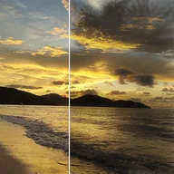

Lueur sombre

Étend les parties sombres du calque sur les parties claires, comme une lueur faite d’ombre.
Réglages
| Réglage | Type | Plage | Par défaut |
|---|---|---|---|
| Diffusion | Nombre | De 0 à 300 | 40 |
| Seuil | Nombre | De 0 à 1 | 0.3 |
| Couleur | Couleur | – | #000000 |
| Fusion | Nombre | De 0% à 100% | 25% |
| Alpha | Nombre | De 0% à 100% | 75% |